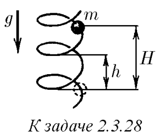

Условие:
\(2.3.28^*.\) По вертикально стоящей гладкой и твердой спирали скользит бусинка массы $m$. Радиус петли спирали равен $R$, шаг спирали (расстояние по вертикали между соседними витками) — $h$. С какой силой бусинка действует на спираль в момент, когда она спустилась по вертикали на расстояние $H$? Начальная скорость бусинки равна нулю.

Решение:
Угол касательной к винтовой линии с горизонтом равен $α$, причем
Когда бусинка спустилась на $H$, она приобрела кинетическую энергию $E_{кин} = mgH$ и скорость $v=\sqrt{2gH}$ (т.к. начальная скорость равна нулю).
Сила, с которой бусинка действует на спираль:
$F = \sqrt{ F_{центр}^{2} + F_{норм}^{2}}$
где
$F_{центр} = \frac{mv_{гор}^{2}}{r} = \frac{mv^{2}}{r [1 + (h_{0}/2 \pi r)^{2}]}$
$F_{нopм} = mg \cos \alpha = mg \frac{2 \pi r}{(h_{0}^{2} + 4 \pi^{2} r^{2})^{1/2}}$
$F = \frac{mg}{1 + (h_{0}/2 \pi r)^{2}} \left [ 1 + \left ( \frac{h_{0}}{2 \pi r} \right )^{2} + \left ( \frac{2h_{0}}{r} \right )^{2} \right ]^{1/2}$